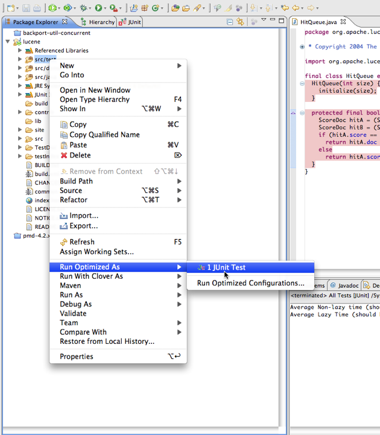
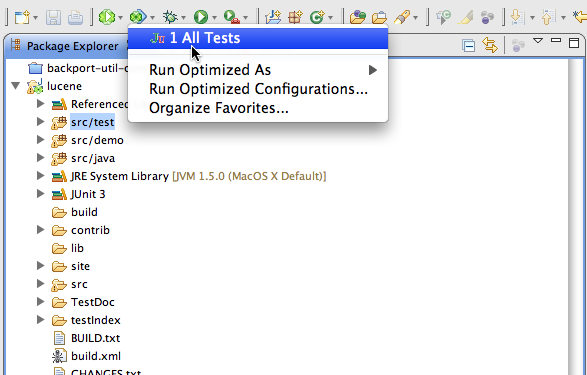
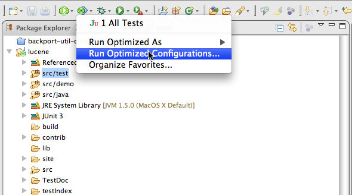
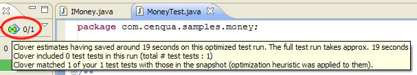
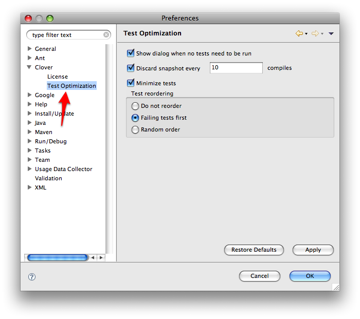
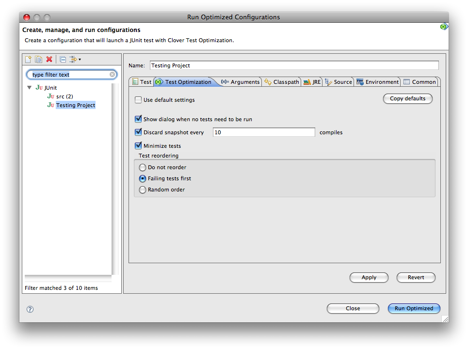

This page explains how to set up Clover's Test Optimization feature in the Eclipse development environment.
On this page:
Before You Begin
Before using Test Optimization with Clover-for-Eclipse, be aware of the following.
- Test Optimization is available as a launch command, similar to 'Run' or 'Debug'.
- Test Optimization supports JUnit launch configurations only.
- Ensure you have Clover enabled on the project - when there is no Clover instrumentation, there is no Test Optimization.
Launching Test Optimization
To establish Test Optimization in Clover-for-Eclipse, carry out one of the following actions:
- Select a folder or package containing test classes and click the 'Run Optimized' icon , OR
- Right-click on a folder or package containing test classes and select 'Run Optimized As: JUnit Test', OR
Screenshot: Launching a Build with Test Optimization from the Context Menu

- Select an existing launch configuration from the Run Optimized dropdown, OR
Screenshot: Launching a Build with Test Optimization from the Drop-Down Menu

- Create a Run Optimized configuration and execute it from the configuration dialog.
Screenshot: Launching a Build with Test Optimization from the Configuration Dialog

 When the Run Optimized button is used, Clover
will run the configuration that was most recently run optimized.
When the Run Optimized button is used, Clover
will run the configuration that was most recently run optimized.
Measuring Test Optimization Results
When Optimized tests are being run, the JUnit view displays additional info about savings (as shown in the screenshot below).
Screenshot: Pop-up Notification of Time Savings With Test Optimization

After Optimized tests run, Clover saves a snapshot file with coverage information that is used to
optimize the following test runs.
This file may be deleted using the Delete Snapshot icon
in the Coverage View (next to Delete Coverage Recordings button; you need to select a project
first).
 The 'Delete Coverage Recordings'
button
also clears the snapshot file.
The 'Delete Coverage Recordings'
button
also clears the snapshot file.
The Delete Snapshot icon is disabled when the selected project does not have the snapshot file.
Test Optimization would run all tests (no optimization) when the snapshot file is deleted or absent.
Test Optimization Settings
The list below shows the settings available for Test Optimization.
- Show dialog when no tests need to be run: when Test Optimization reduces amount of tests to 0, display a notification dialog. Otherwise JUnit silently does nothing.
- Discard snapshot every X compiles: when enabled, snapshot is re-generated every X compiles. This is the equivalent of Ant's 'fullrunevery' setting.
- Minimize tests: main functionality. When disabled Clover only reorders tests, all of them are always run.
- Test reordering:
- Do not reorder (means NOOP if Minimize Tests is also off)
- Failing tests first: reorder tests so that the ones which failed the last time Optimized Test was run are run first.
- Random order.
Setting Global Preferences
Screenshot: Setting Global Preferences

These are global (workspace-scope) preferences of Test Optimization; they are used as a template for per-launch configuration preferences, or used when launch configuration uses default settings.
Setting Per-launcher Preferences
Screenshot: Running Optimized Configurations

Screenshot: The Run Optimized Drop-Down Menu
Allows overriding the workspace settings for single launch config.
- Use default settings: when set, use the workspace (global) settings.
- Copy defaults: copy workspace settings to current settings.
Configurations Unsuitable For Test Optimization
Some configurations are not suitable for Test Optimization. Please see the following points for specific details.
Limitations with Multi-Project Set-Ups
Clover does not aggregate data across projects, so it is not possible to detect changed sources in projects other than the one the test is in. As a result, if your project contains tests that are dependent on other projects, any change in those projects would not be detected by Test Optimization and some tests that should be run will be 'optimized' too aggressively and not executed.
For more information, see this JIRA issue: CEP-297.
Limitations with Test Suites
Clover does not recognize test suites as entities that should be optimized away. As the result test
suites are always run (never optimized).
If your test launch configuration includes both test
suite and the test case (which is probably an incorrect configuration), then the test case would be
run twice (normal behavior) or once (via test suite) when the test case is optimized away.
Resolution: Do not include test suites in launch configuration, add test cases directly.
For more information, see this JIRA issue: CEP-299.
Limitations with Testing Frameworks
Test Optimization is only supported with JUnit tests at this time.
Troubleshooting
To troubleshoot Test Optimization in Clover-for-Eclipse, check through the following solutions:
- If Clover is disabled for the project or generally Clover does not work for the project;
- Check the project icon has the nice green Clover overlay.
- Check whether Coverage Explorer shows any coverage for the project.
- If Clover has the test source settings wrong;
- Check whether the Test Run Explorer shows any tests.
- Go to project Properties | Clover | Test Classes, make sure that either the Ant-style pattern or source folder list selects all your test classes properly.
- If Test Optimization does not work when your have tests in different project than the classes
being tested;
- This is a known issue. See this JIRA issue for more details: (CEP-297).
- If your test case is run twice, or not optimized at all;
- Clover does not support test suites. Make sure you don't try to run one, launch test cases directly (CEP-299).
Next chapter: 8. Launching an Ant build from Eclipse.